← My works/ 03
Brand & identity design · 2023 – 2024
Armoni
Can a brand make people feel something before they read a word? I built Armoni on my own, from logo and mascot to signage, to find out.
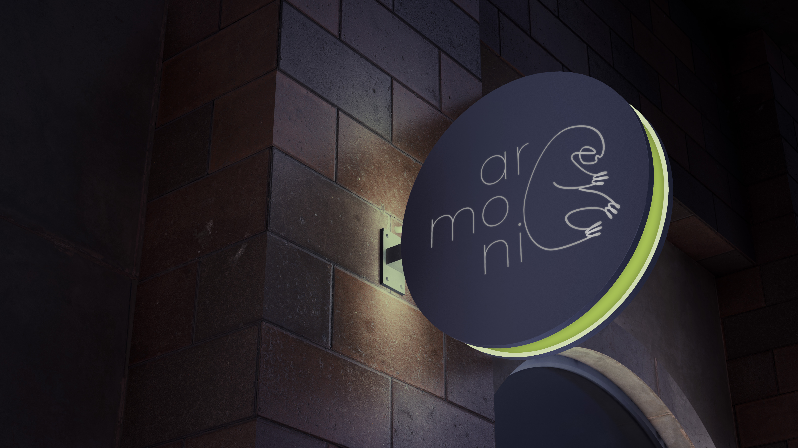
The challenge
One visual system that works everywhere, digital, print and physical, without feeling like five different companies.
What I did
Logo, mascot, type, products, a website and environmental graphics, all speaking the same visual language.
Concept
Harmony, literally
Armoni started as a personal study of how far visual identity can go in shaping how people feel. The name comes from harmony and balance, so color, form and type had to work together everywhere the brand showed up, without visual noise getting in the way.
- Smooth curves inspired by natural movement
- A modern but friendly tone
- A warm, inviting palette
- Consistent spacing and rhythm across layouts
Clear, friendly and approachable. Never corporate, never sterile.
Logo
Soft shapes, steady structure
Simple geometric forms give a sense of balance and movement. Rounded shapes add warmth, while the structured composition keeps it ordered. I made horizontal, stacked and icon-only versions so it holds up anywhere.
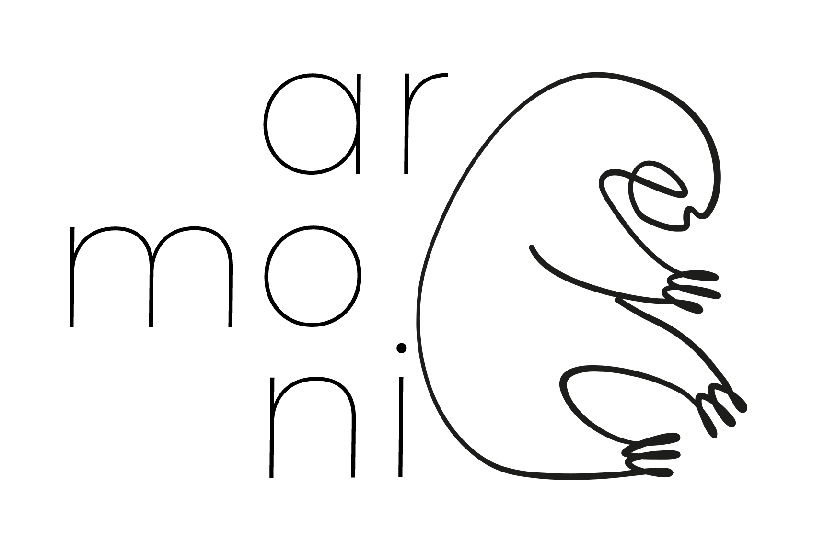
A spacing system and construction grid keep it consistent, whether it's scaled up for print or shrunk down to a favicon.
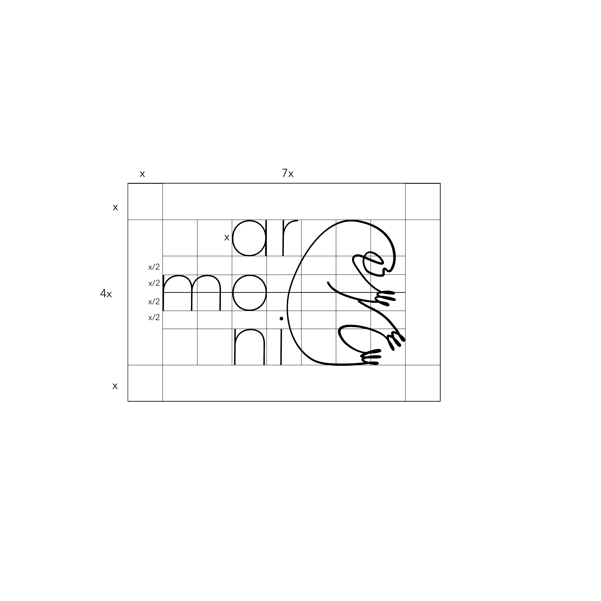
Mascot
The part people remember
A sloth with soft shapes, gentle expressions and a rounded silhouette, echoing the calm in the name. It shows up on packaging, signage, marketing and promotional pieces, and it's what makes the brand feel playful instead of just polished.
Different poses let it flex across moods and uses without losing its identity.
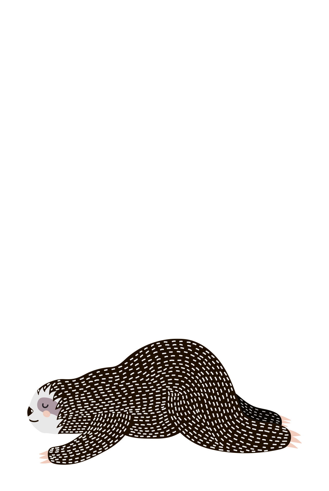
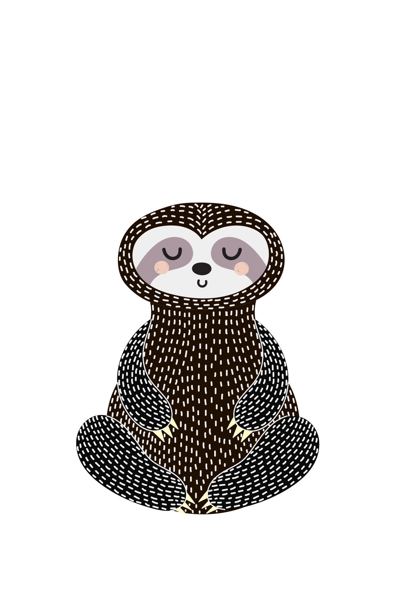
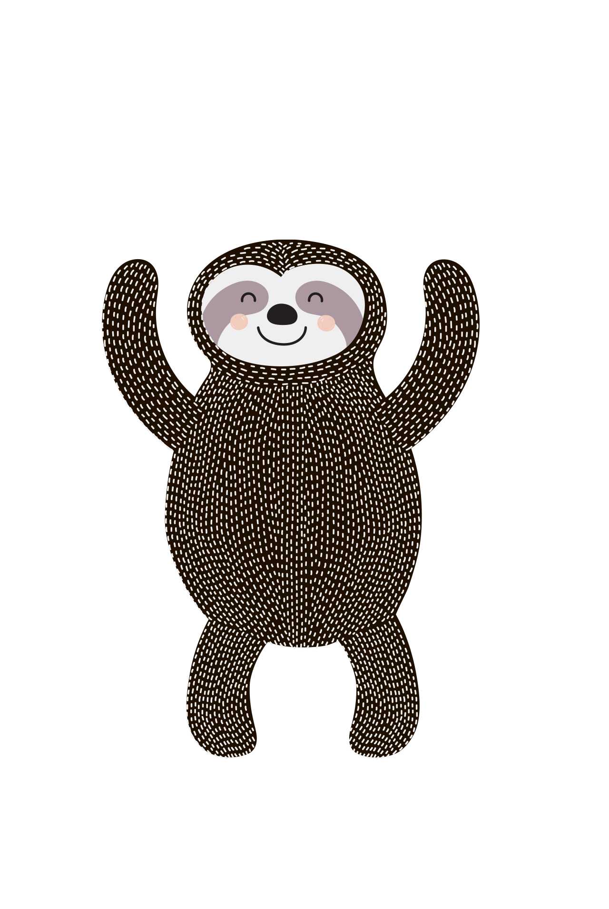
Color & type
The rules behind the warmth
Warm, inviting tones paired with neutral supporting shades give every touchpoint the same rhythm without locking layouts into one rigid look. Fira Sans carries body text and headings; Montserrat appears mostly in logo applications. Hierarchy guidelines cover print, web and signage.
Branding manualStationery
The brand's formal side
Business cards, envelopes, folders, letterhead and printed documents, all following the same spacing, color accents and mascot placement as the rest of the system.

Products
Something you can hold
I took the identity into everyday products, each working the mascot, palette and illustration style into something functional. Same rounded forms, same soft color transitions, so they all feel like they came from the same place.
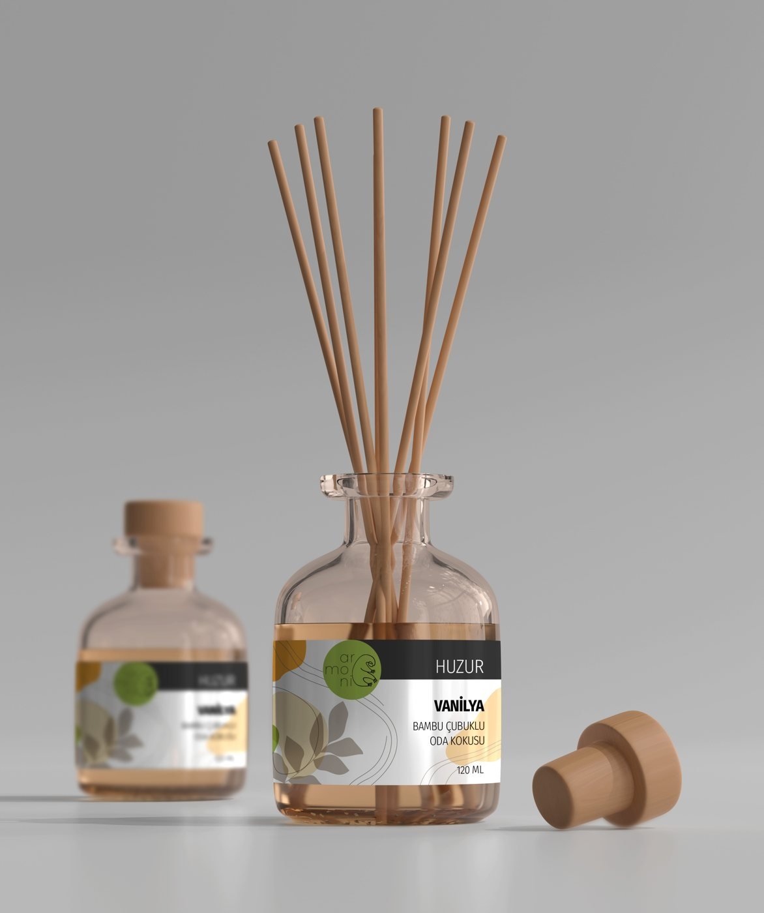
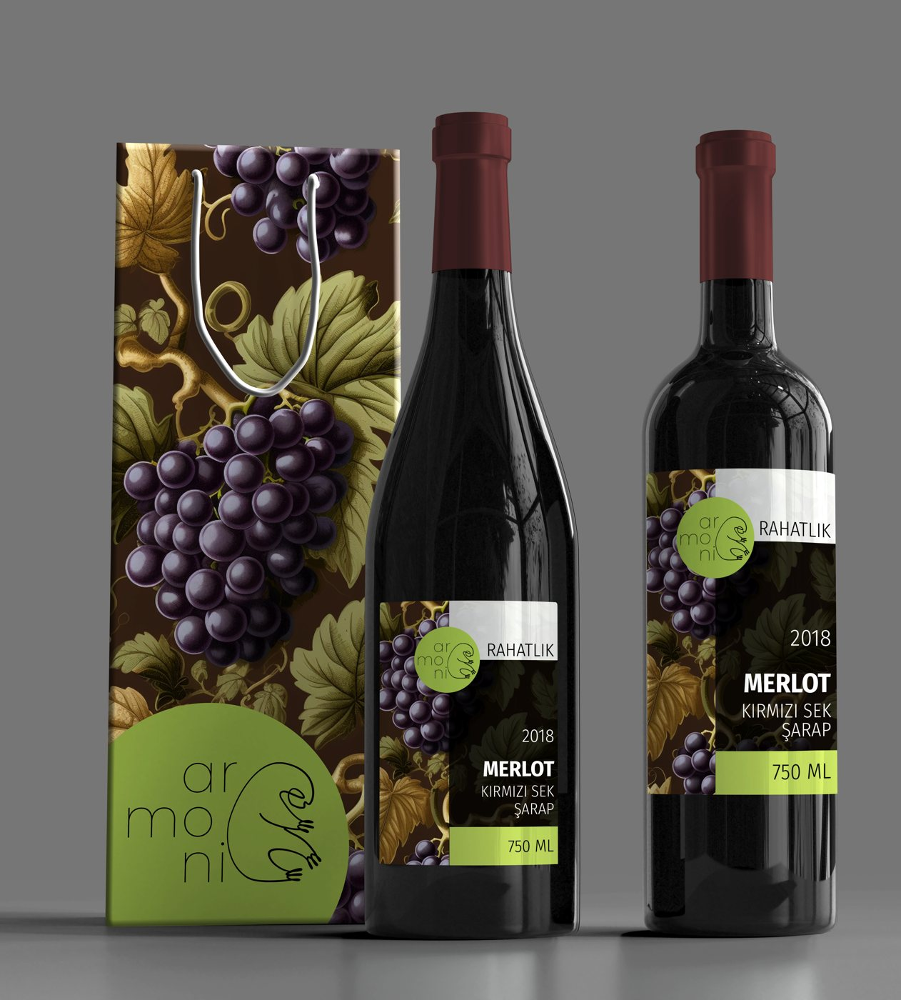
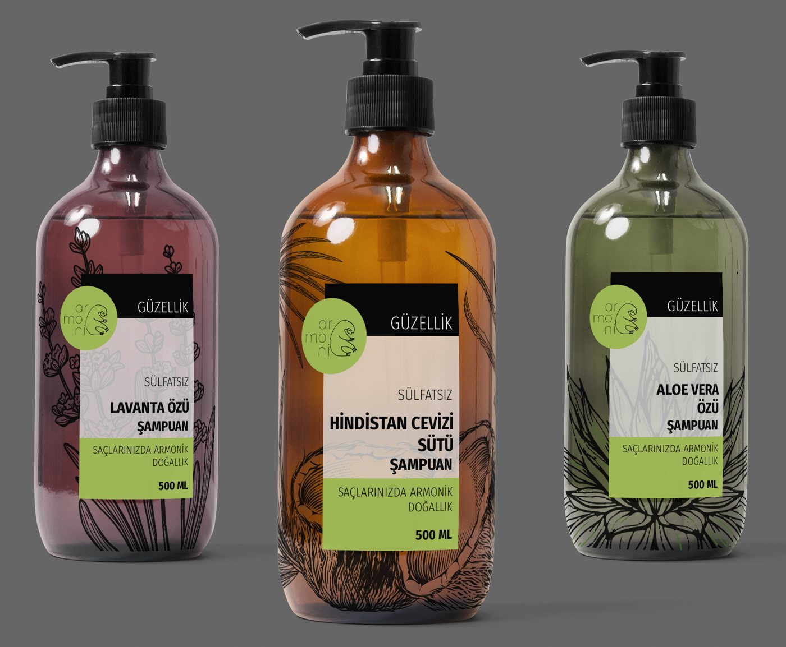
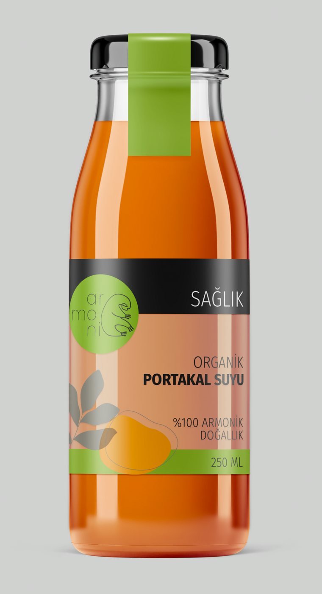
Merch
Let the sloth loose
Apparel, totes, stickers, notebooks and giveaways for events and pop-ups. Less about function, more about visibility: a low-key way for people to meet the brand and remember it.
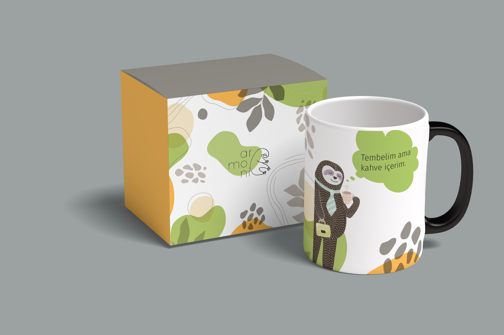
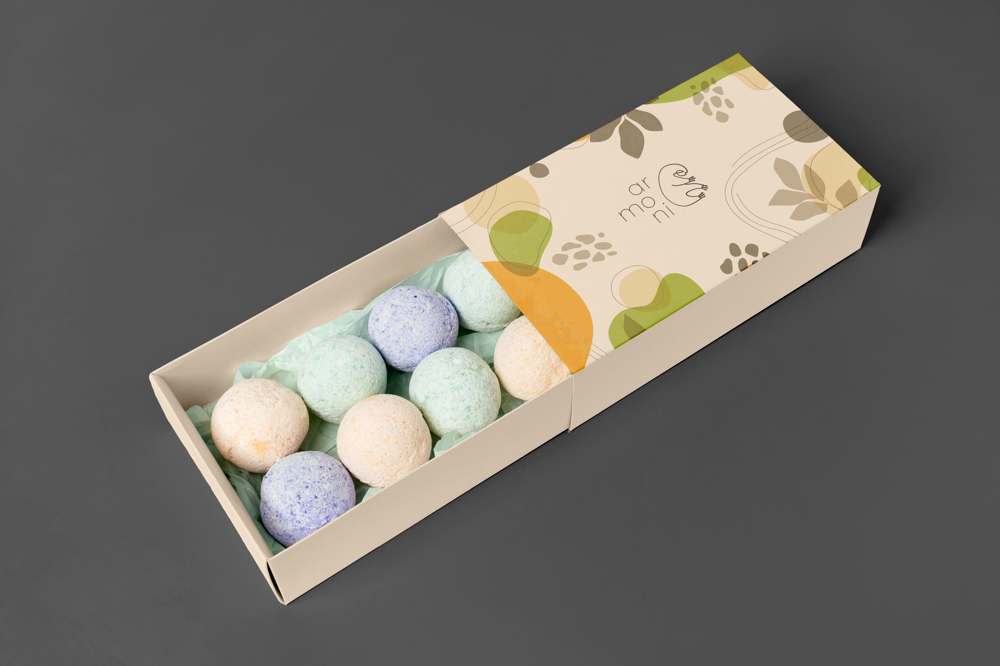
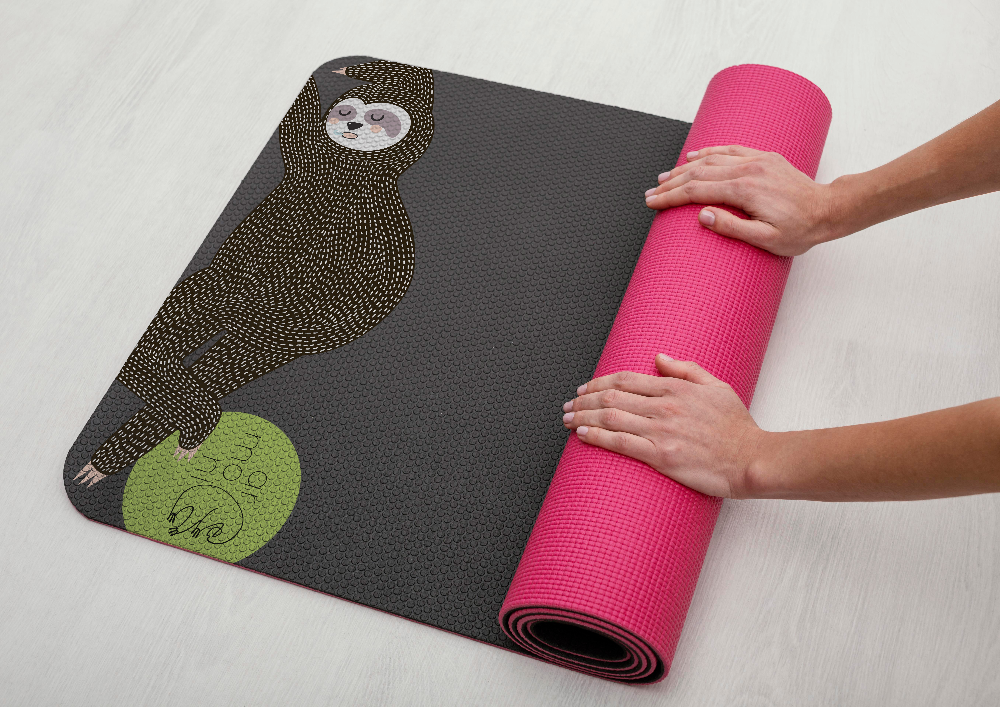

Spaces
A brand you can walk through
Storefront signage, display walls, interior graphics and wayfinding. Outdoor pieces are built to be recognized from a distance; indoor spaces lean into comfort, color and storytelling up close.

Website
Same voice, on a screen
A responsive site that carries the visual language online, with large visuals, generous spacing and soft transitions. Prototyped in Figma with accessibility, legibility and a mobile-first layout in mind.
- Brand introduction
- Product pages
- Mascot illustrations
- Visual storytelling

Brochure
Structured, in print
Modular grids, clean hierarchy and consistent type bring the identity into a more formal, professional format.
Reflection
What this taught me
Consistency across touchpoints matters more than any single hero image. A mascot only works when the spacing, color and tone stay disciplined everywhere it shows up.
Next project · 04
Multi-User VR Lab
A virtual biology lab where several people can learn side by side.